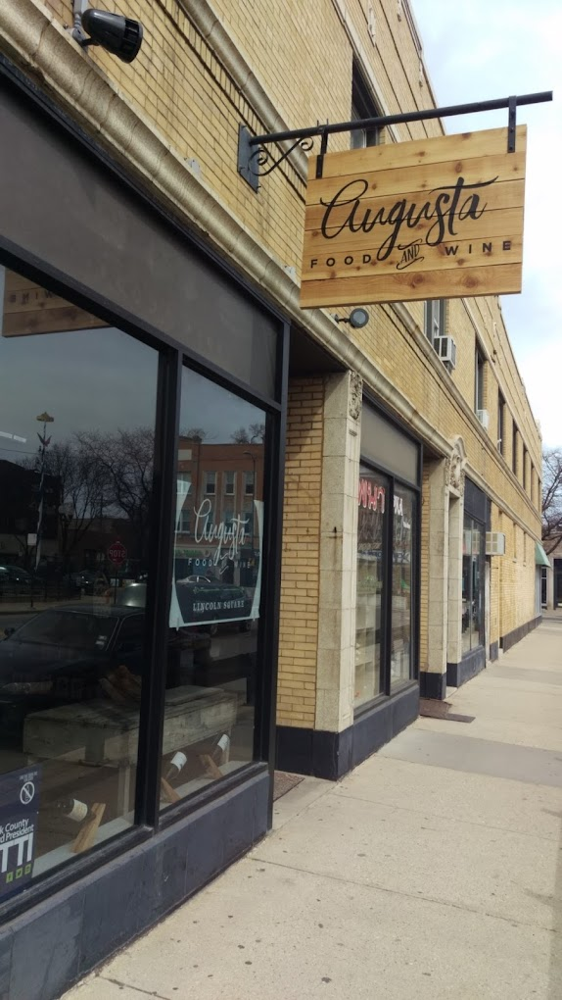
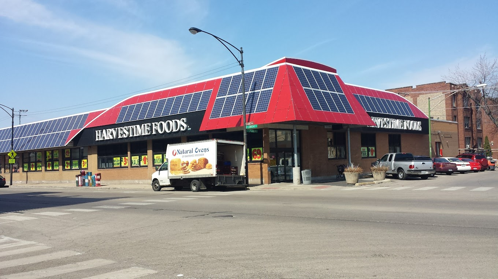
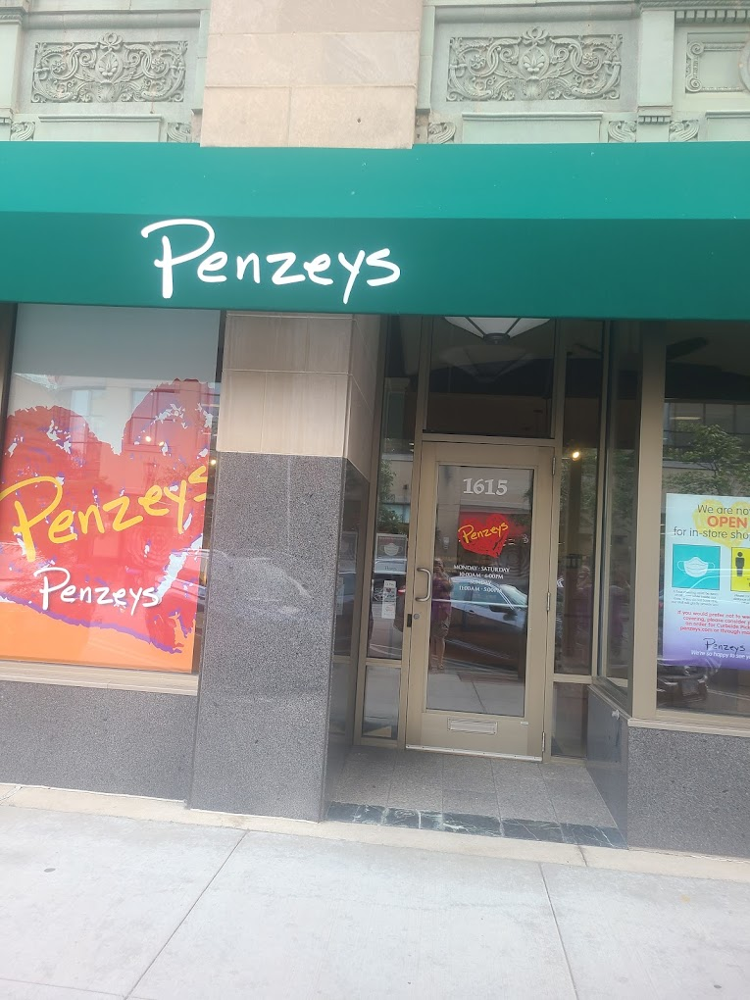

<!DOCTYPE html>
<html>
    <head>
        <title>Lab 2</title>

         <link rel="stylesheet" href="https://unpkg.com/leaflet@1.9.4/dist/leaflet.css"
           integrity="sha256-p4NxAoJBhIIN+hmNHrzRCf9tD/miZyoHS5obTRR9BMY="
           crossorigin=""/>

         <script src="https://unpkg.com/leaflet@1.9.4/dist/leaflet.js"
           integrity="sha256-20nQCchB9co0qIjJZRGuk2/Z9VM+kNiyxNV1lvTlZBo="
           crossorigin=""></script>

    </head>

    <body>
        <div id="map" style="height: 500px"></div>

        <script type="text/javascript">

          var map = L.map('map', {
              center: [41.97944277375894, -87.66816653112642],
              zoom: 12
          });

          L.tileLayer('https://{s}.tile.openstreetmap.org/{z}/{x}/{y}.png', {
               attribution: '@ <a href="https://www.openstreetmap.org/copyright">OpenStreetMap</a> contributors',
               maxZoom: 11,
               minZoom: 11
            }).addTo(map);
			
	
var storeIcon = L.icon({
    iconUrl: 'store.png', // url that links to the icon image file, saved in the same folder as the current page 
    iconSize:     [25, 25], // size of the icon image in pixels
    iconAnchor:   [19, 19], // the top left corner of the icon will be aligned so that this point is at the marker's geographical location
    popupAnchor:  [0, -10] // point from which the popup should open, relative to the iconAnchor
});		

var marker1 = L.marker([41.9670564787932, -87.68791920459803], {icon: storeIcon}).addTo(map);
var marker2 = L.marker([41.96904042368829, -87.69531955552206], {icon: storeIcon}).addTo(map);
var marker3 = L.marker([42.0478277813995, -87.68159838925088], {icon: storeIcon}).addTo(map);


var pic1 = '';
var pic2 = '';
var pic3 = '';

marker1.bindPopup('<p style="color:DarkRed; font-weight:bold"> Carries sodium free savory finishing sauce </p>' + pic1);
marker2.bindPopup('<p style="color:Orange; font-weight:bold"> My local source of nutritional yeast </p>' + pic2);
marker3.bindPopup('<p style="color:Olive; font-weight:bold"> Great selection of salt free spices and seasonings </p>' + pic3);
        </script>
   </body>
</html>
